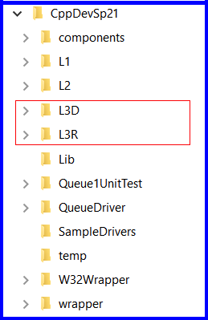
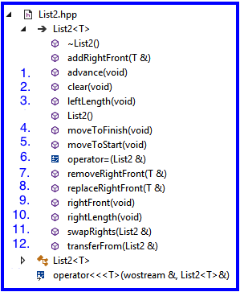

1.1 Get the L3Starter Download
|
|
1.2 Copy List2.hpp from the L3Starter.zip
1.3 Copy Folders from the L3Starter.zip
1.4 About Project L3D and L3R
|
 |
The primary objective of this lab is to provide you experience working with:
Steps:
Hints:
|
 |
Important Restrictions:
Design by Contract - Example
| List2 implementation of rightFront Implemented Using Design by Contract Use This Engineering Technique |
List2 implementation of rightFront Implementation Fails to Use Design by Contract Also Known As: Defensive Programming DO NOT USE THIS APPROACH |
template <class T>
T& List2<T>::rightFront(void)
//! restores self
//! requires: self.right /= <>
//! ensures: <rightFront> is prefix of self.right
{
// assumes client has met the requires clause
// assumes the correspondence holds
return rightQ.front();
// guarantees the correspondence still holds because nothing was done leftQ or rightQ
} // rightFront |
template <class T>
T& List2<T>::rightFront(void)
//! restores self
//! requires: self.right /= <>
//! ensures: <rightFront> is prefix of self.right
{
// fails to assume client has met the requires clause
if (rightQ.length() > 0) {
return rightQ.rightFront(x);
} // end if
} // rightFront |
Use Boundary Condition Testing:
The Grader's test cases:
Grading will be done running a more complete set of unit tests which will systematically stress your member function implementations